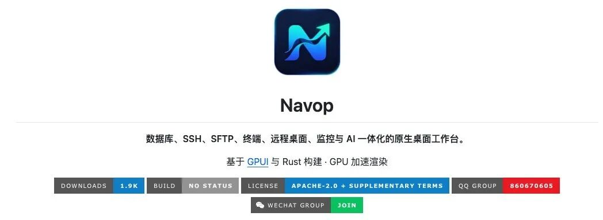
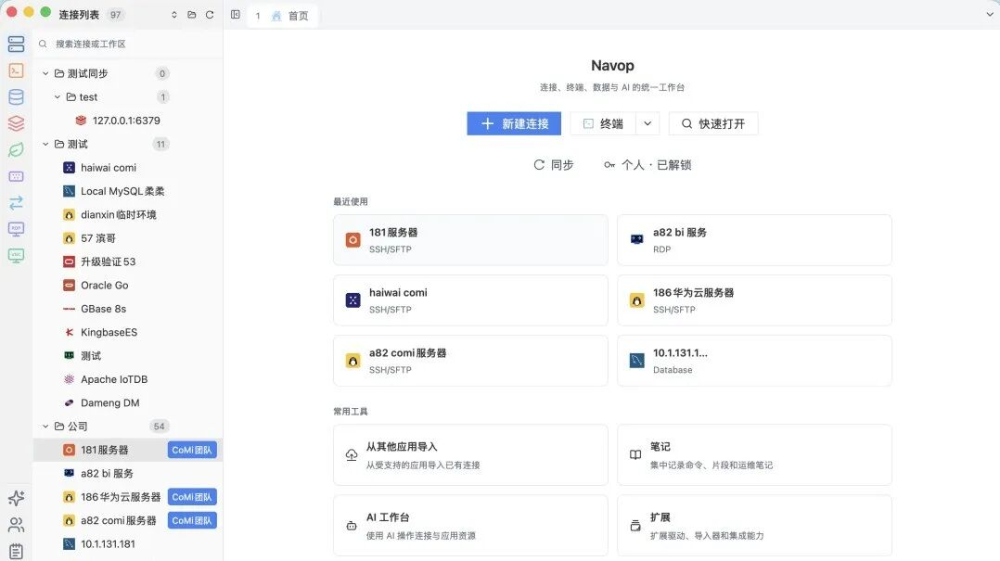
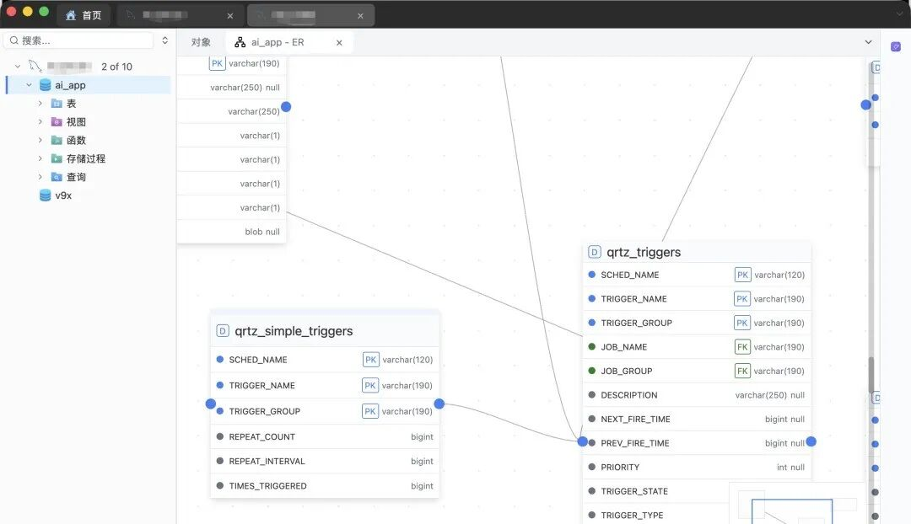
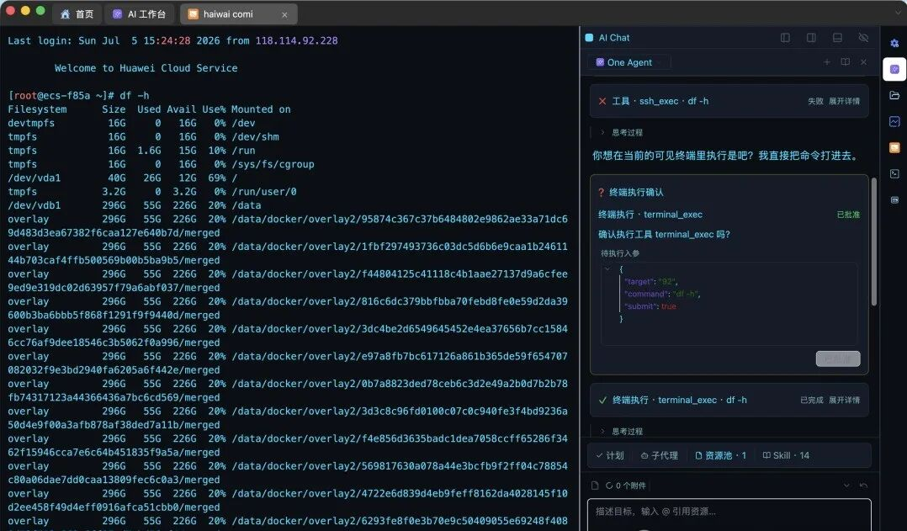
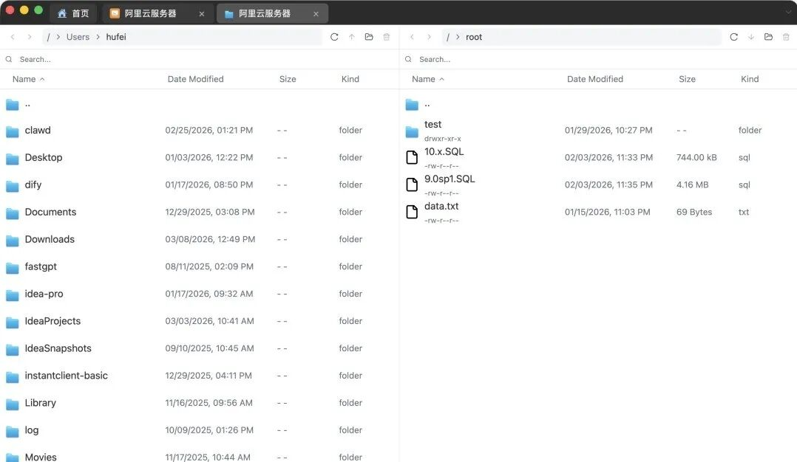
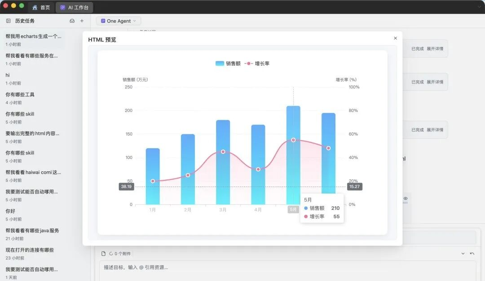
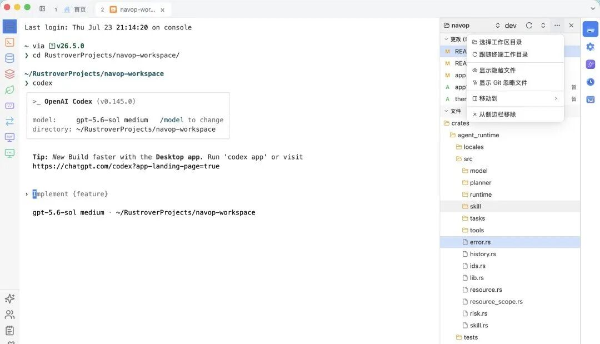
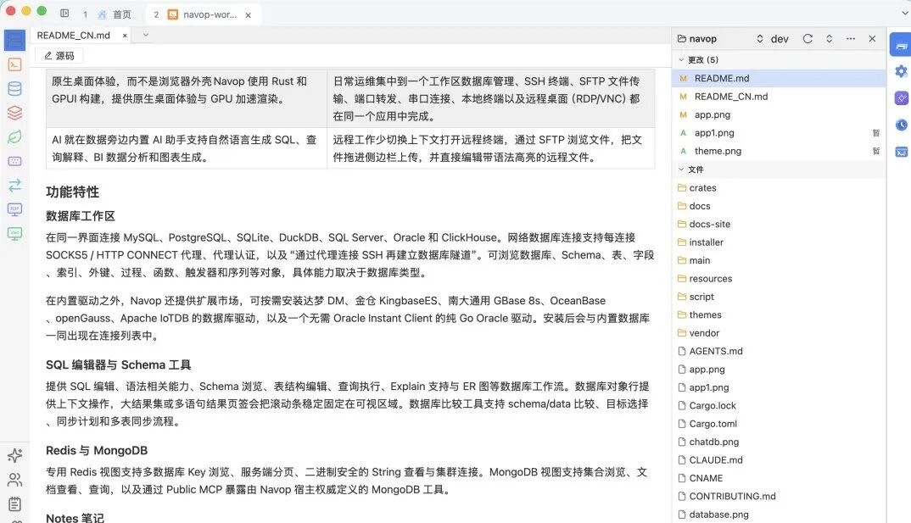
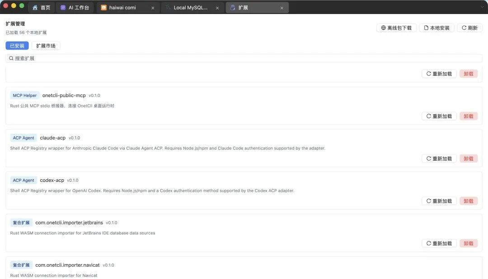

把 AI 装进了 SSH 终端，这款强大的远程终端工具开源了！
来源：微信公众号 归档日期：2026-10-06 抓取状态：成功 原文字符：4632｜配图：26 张
摘要速览
- 点击“终码一生”，关注，置顶公众号 每日技术干货，第一时间送达！ 常年和运维工具打交道的人，桌面上大概率是这副景象：数据库客户端一个、SSH终端一个、SFTP工具一个，远程桌面还得再开一个。每个都用了很久，但窗口一多，切换成本就在不知不觉中累积起来。
核心内容
（待补充）
可执行启发
（待补充）
我的想法
（待补充）
原文沉淀
来源：https://mp.weixin.qq.com/s/sddXH_qxY0LlPvftJy4rTA 平台：weixin｜作者：终码一生 抓取方式：cdp｜字符数：8151｜图片：26
点击“终码一生”，关注，置顶公众号
每日技术干货，第一时间送达！
常年和运维工具打交道的人，桌面上大概率是这副景象：数据库客户端一个、SSH终端一个、SFTP工具一个，远程桌面还得再开一个。每个都用了很久，但窗口一多，切换成本就在不知不觉中累积起来。
最近用了几天Navop，它想做的事很简单——把这些工具合并到一个应用里，顺带塞进一个AI助手。


01
它是什么

Rust写的桌面应用，个人开发者维护。名字来自Navigate加Operation，定位是“把数据库、服务器、终端连在一个地方，日常运维一次干完”。
功能覆盖：
- 数据库管理
- SSH终端
- SFTP文件传输
- 端口转发
- 串口连接
- RDP/VNC远程桌面
- 内置AI助手

三大平台都有安装包，Apache 2.0开源，全部功能免费。

02
数据库支持，国产库是加分项

内置：MySQL、PostgreSQL、SQLite、DuckDB、SQL Server、Oracle、ClickHouse。
国产库方面：达梦、人大金仓、GBase 8s、OceanBase、openGauss、IoTDB，去扩展市场装驱动即可。
做Java的都知道，这两年政企和信创项目里国产库出现频率越来越高，但很多工具对这块视而不见。Navop把国产库支持做进去了，这一点在同类工具里确实少见。
常规操作也齐全：浏览对象、执行SQL、看执行计划、导入导出、表结构和数据对比，表多了还能画ER图。

Redis和MongoDB有专门的操作界面，不是简单拼接，key的浏览和编辑都做得比较完整。
连接支持SOCKS5代理、HTTP代理和SSH隧道，连内网库的时候很方便。

03
SSH终端和文件传输

SSH和本地终端都支持标签页和拖拽分屏，快捷命令和历史记录齐全。
广播输入是个实用功能：多台服务器同时执行一条命令，不用挨个窗口敲。
本地终端支持系统shell、PowerShell、CMD、WSL和Git Bash。

SFTP支持上传下载、拖拽、粘贴，远程文件可以直接在应用里编辑，常用路径可收藏。
还有个小细节：两台服务器之间可以直接传文件，省掉“先下载到本地再上传”的中间步骤。

端口转发做成可复用的连接，本地转发、远程转发、动态SOCKS都支持，建好之后下次点开就用。

04
AI助手：位置恰到好处

AI助手就在数据库和终端的旁边，不是单独开一个聊天窗口。
在数据库里选一张表，可以直接让它根据表结构写SQL；写好的SQL能解释给你听；查出来的数据也能让它分析、生成图表。

终端那边，它给的命令可以直接贴进去执行。
官方演示用的模型是DeepSeek，模型可自行配置。支持ACP协议，装扩展之后可以接入Codex、Claude Code、OpenCode这类外部Agent。
Agent Hub：代码审查工作区
把终端Agent、项目文件树、Git分支、改动列表、并排diff放在一起。
Agent改完代码后，提交前可以对着HEAD逐行检查，确认没问题再提交，不用切换到别的工具比对。

MCP服务与CLI
内置MCP服务，只监听本机回环地址，token认证，外部机器连不进来。
权限分三档：
- Safe：只读操作
- Confirm：界面手动确认
- Auto：自动执行
这个设计很关键。AI打通服务器和数据库之后，最怕的就是它自作主张执行写操作。三档权限把风险控制住了。
配合@navop/cli和Skill，用Codex这类终端Agent时，可以让Agent通过Navop查数据库、跑SSH命令、列SFTP文件。
哪些工具可用、权限到哪级、哪些操作要审批——全由Navop这个宿主决定。Agent不许猜参数，也不许绕过审批。

05
其他细节
内置Markdown笔记，支持Mermaid图和数学公式，可导出HTML、PDF、DOCX。

主题有浅色和深色，界面语言支持简中、繁中和英文。
连接配置支持多设备加密同步，用AES-GCM和Ed25519。
扩展市场目前内容不多，但数据库驱动和远程桌面提供者都从这里安装，后续应该会丰富起来。


06
上手顺序

去GitHub Releases下载安装包。
Windows有msi、exe和zip，默认安装位置不需要管理员权限。
macOS下载dmg，如果提示“无法检查是否包含恶意软件”，执行：
-
sudo xattr -rd com.apple.quarantine /Applications/Navop.appLinux有deb、rpm和AppImage，每个版本带sha256sums.txt校验文件。
装完建议按这个顺序试：
- 建一个数据库连接，验证常用的库能不能连
- 添加SSH主机，开远程终端
- 需要隧道就基于SSH主机建端口转发
- 打开SFTP传几个文件
- 有Redis或MongoDB就连上浏览数据
- 打开AI助手，配好模型，让它写一条SQL试试
要接外部Agent，先装Node.js 20以上，然后：
-
npminstall-g @navop/cli@latestnavop skill install--target codex --scope user之后在Navop设置里打开MCP Server，选权限档位和暴露的工具组。

07
适合谁

- 同时管多台服务器和多个数据库的人：桌面上能少开好几个窗口
- 做政企和信创项目的：达梦、人大金仓、OceanBase直接连，这一条就筛掉了很多同类工具
- 想让AI帮忙干运维的：MCP加CLI这条路走得规矩，权限和审批掌握在自己手里，比直接把服务器密码交给AI稳妥
08
客观评价

全家桶式工具见过不少，大部分死于贪多嚼不烂——每个功能都差口气，最后还是得换回原来的工具。
Navop让我意外的地方在于，每个模块都做到了能日常使用的水平。Rust写的，界面流畅度不错。
不足也很明显：个人维护的项目，功能铺得这么宽，长期维护能不能跟上，现在不好下结论。远程桌面和部分数据库驱动还需要从扩展市场安装，不是装完就有。偶尔会遇到一些小Bug，这也是早期开源项目必经的阶段。
整体来看，全功能免费，国产库支持到位，AI能力也跟上了节奏。
如果桌面上同时开着好几个运维工具，可以装一个试试。用顺了再考虑要不要替换掉旧工具。
- 开源地址：https://github.com/feigeCode/navop
—END—
PS：防止找不到本篇文章，可以收藏点赞，方便翻阅查找哦。
往期推荐
安卓版 Ollama 杀疯了：6GB 旧手机跑大模型，OpenAI 接口随便调
归属：[[02-输入/按主题/工具与技术/_index|工具与技术]]